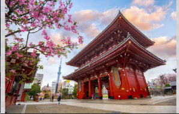
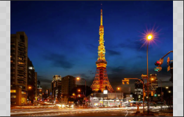
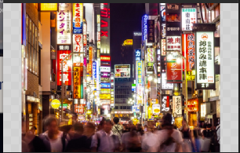
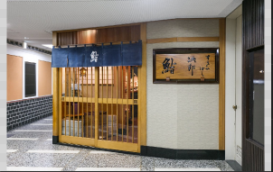
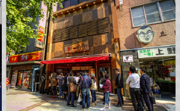
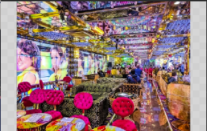

Tokyo, la ville qui ne dort jamais, est un mélange envoûtant de l'ancien et du moderne. Des gratte-ciel étincelants aux ruelles remplies de charme, chaque coin révèle une nouvelle surprise. C'est un endroit où l'effervescence des rues animées contraste avec la tranquillité des jardins traditionnels. La cuisine délicieuse et diversifiée est à chaque coin de rue, des stands de ramen aux restaurants étoilés au Michelin. Tokyo offre une expérience sensorielle incomparable, un voyage au cœur de l'énergie et de l'élégance à la japonaise.
|  |  |  |
|---|---|---|
| Le Temple Senso-ji à Asakusa :Situé à Asakusa, ce temple bouddhiste millénaire est un véritable trésor culturel. Les rues commerçantes voisines ajoutent à son charme, offrant des souvenirs et des saveurs traditionnelles. | La Tour de Tokyo : Cette icône emblématique offre des vues imprenables sur la ville. Montez au sommet pour une expérience visuelle captivante de Tokyo illuminée la nuit. | Le Quartier de Shibuya : Shibuya, cœur de la jeunesse tokyoïte, est célèbre pour son carrefour frénétique. Mais c'est aussi un lieu de tendance, regorgeant de magasins, de cafés et de restaurants branchés à explorer. |
|  |  |  |
|---|---|---|
| Sukiyabashi Jiro : Ce restaurant de sushis légendaire situé dans le quartier de Ginza est mondialement connu. Tenu par le célèbre chef Jiro Ono, il offre une expérience de sushi exceptionnelle et authentique. | Ippudo Ramen : Spécialisé dans les ramen, Ippudo est une chaîne de restaurants réputée pour ses bols de nouilles savoureux et ses bouillons riches. Vous trouverez plusieurs succursales à Tokyo, offrant différentes variantes de ramen. | Robot Restaurant : Niché à Shinjuku, le Robot Restaurant offre un spectacle futuriste époustouflant avec des robots géants, des éclairages vibrants et des performances dynamiques, tout en proposant une expérience culinaire inoubliable. |